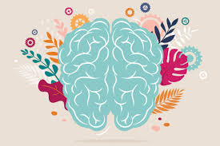

“What you think you become.
What you feel you attract.
What you imagine you create.”
— Buddha
The law of attraction is a natural law stating that like attracts like.

Everything on our planet (and beyond) is energy and is constantly vibrating. And the law of attraction sums up that everyone attracts what he’s putting out there through his own energy and vibration.
The law of attraction is guided by the 7 laws of the universe.
Yet, the majority of humanity either never learns about universal laws such as the law of attraction, or they chose not to believe in it. But, here’s the good news: Regardless of your belief, you’re acting as a human magnet 24/7, sending vibrational frequency out to the universe and receiving the same energy back. There’s no way not to use the law of attraction. You’re doing it all the time. The law of attraction is always working. It doesn’t matter if you believe in it or not. Stating that you don’t believe in the law of attraction is as if you’d say you don’t believe in the force of gravity. The universe doesn’t care whether you believe in it or not.
“Our deepest fear is not that we are inadequate. Our deepest fear is that we are powerful beyond measure. It is our light, not our darkness that most frightens us. We ask ourselves, Who am I to be brilliant, gorgeous, talented, fabulous? Actually, who are you not to be?” — Marianne Williamson
When people are unhappy with their current circumstances, they tend to dwell on these negative thoughts. They are constantly thinking of all the things they do not have, the things that they want to have but feel they can’t have, and how unhappy the circumstances make them feel. Now that you understand what the Law of Attraction is, you realize how bad this really is! In order to cultivate the life you desire, you need to become aware of your thoughts and what you are thinking. When you find yourself spiraling down a negative path, you need to change your focus onto something more positive. You can read more about this concept in my post on the secret of setting a positive intention for a happy day.
Everything in this universe is vibrating at its own frequency, including us. To get you ready to receive whatever you desire, you need to tune your vibrations to the frequency of your desire. This is possible through positive thoughts and affirmations. Manifestation pros are those who manage to raise their vibration and keep high vibes for the majority of the time. Of course, you can’t be positive and cheerful all the time, but that’s not what you need anyway. It’s just about getting rid of unnecessary negativity and bad vibes and instead focusing on the life you want to create. The whole manifestation process is based on our dominant feelings and beliefs. So, our superior thoughts and, more importantly, the feelings behind these beliefs are what lead to manifestation. Thus, these feelings are what we want to take care of in our daily lives. Here are tiny steps you can take to raise your vibration, increase your energy, and attract the greatness you’ve always been dreaming of:
Being positive doesn’t mean avoiding the bad at all costs. Our lives are always in balance: The good can’t exist without the bad, and life couldn’t flourish without death. We all face negativity and bad happenings, just as often as great ones. What matters, though, is how we react to these experiences. As Epictetus once said:
“It’s not what happens to you, but how you react to it that matters.”
Shit happens to all of us, what matters is how you deal with it. And if you want to live a great life and attract your biggest desires, you better chose a problem-solving attitude instead of feeling sorry for yourself.
Doing things we love automatically raises our frequency. By eating food you enjoy, meeting people you love, going to places that light up your soul, or engaging in activities that make you happy, you can instantly change your mood, level up your vibration and attract even more of what you enjoy. Too often, we believe that we need to work hard for happiness and become so set on our goals that we forget to enjoy our lives. Yet, by showing the universe that you appreciate your days, you’ll attract even more joy and ease.
Appreciating what you already have is one of the most powerful ways to raise your vibration and make use of the law of attraction, and it’s so easy. A gratitude journal is simply a place where you take notes of everything that you’re grateful for: Your home, the people you’re surrounded by, your health, access to food, water, education,…once you decide to practice gratitude, you’ll see that you already have so much to be thankful for.
Just like a gratitude journal, meditation is a quick, powerful way to increase your energy and raise your vibration. Particularly meditating after journaling about your blessings, your aspirations, or powerful affirmations can have a massive impact on your energy and level up your mood.
Great manifestors appreciate and even love themselves. They accept all their mistakes and failures and keep moving forward regardless of setbacks.
Loving yourself is the strongest sign of manifestation you can send out to the universe. And even though self-love is a process that might take some time, you can actually start taking action right now.
Practicing self-care and doing things that make you feel good doesn’t need to be hard or time-consuming. Even tiny habits can lead to more self-love and confidence and increase your vibration.
And the more you love yourself, the more love you’ll attract.
Manifesting something big isn’t harder than manifesting a cup of coffee. Yet, most people fail at manifesting because they try to attract things as big as a house or a vast, unexpected payment without fully believing they can do it.
The moment you start doubting the law of attraction and the manifestation process, you kill it.
The universe always delivers what you believe and feel, you can’t fool it. The moment you doubt that it will work, you make sure that it won’t.
That’s why starting with small manifestations andproving yourself that it actually does work is an essential step to getting rid of doubts before starting to manifest huge things.
Once you are clear about what you want to attract, it’s all about taking determined action. The universe won’t work for you but with you.
Demolish limitations:
Before you start using the Law of Attraction, you need to do an inventory check of existing thoughts and beliefs.
Don’t be surprised to find some restricting ones that can hamper your progress. Do away with them.
Take control of your thoughts:
Every thought is made up of energy. Your mind is like a runaway horse when you give it free rein. A procession of thoughts passes through it during your waking hours. Some of them are good, some not-so-good, some really bad. When you are starting your journey with the Law of Attraction, you need to have control over your thoughts. Staying positive is vital in manifesting your desires. Be the energy you want to attract.
Don’t bother about ‘how’:
It is natural to ask how you are going to achieve your goal. But that is not the way this concept works. All you need to do is decide what you want and ask for it. You need to train your brain to ignore its curiosity in this regard.
The Law of Attraction steps can be deceivingly simple, but not so easy to apply and follow. You are assured of the benefits of the Law of Attraction by repeating these easy-to-follow exercises.
The law of attraction can help you to accomplish your goals with more ease, but of course, you need to do the work. Sitting on the couch eating ice cream all day and wishing for a healthy, lean body obviously won’t work, no matter how much you believe in it.
The Law of Attraction is about replacing negatives thoughts and feelings with positive energy. You are focusing on what you want rather than what you don’t want.
When you hear about it for the first time, it is natural to ask yourself whether the law of attraction is true. Even the followers of the Law do have their moments of doubt. Critics are eager to write it off as pseudo-science or mumbo jumbo. How can we prove its veracity when everything about it is in the mind; something we cannot see, touch or feel?
The misconception about the Law of Attraction stems from the idea that by visualizing what you want and asking for it, you will get it. Even if it is a Lamborghini. The truth is far from this.
Eliminating bad things in your life and filling it up with positive actions, feelings and thoughts are sure to make you feel good. And the elated feeling is bound to support you get the very best out of your life.
For those searching for proof of its truthfulness, the evidence is the inner happiness experienced by its proponents. And not the materiel gains like an expensive car or a palatial house or a high-flying job. For some, these may bring happiness, but there is no guarantee.
The actual proof is in how you feel.
Through numerous scientific studies it is well established that our mind plays an important part in our health; both physical and mental. The placebo effect as described in modern medicine proves this point convincingly.
The Law of Attraction techniques use the healing power of our mind to improve our mental and physical health.
This method can be used in conjunction with conventional medical treatment to speed up recovery.
According to the principles of the Law of Attraction, the concept of mind over body works in two ways. You can use your mind to heal your body ailments. And an unhealthy mind leads to a sick body as well.
Listed here are some simple procedures to help you to keep them healthy.
Mental stress is the biggest villain. Whether the source of the stress is internal or external, it leads to the accumulation of negativity. If left unchecked, this can result in some serious mental and physical illnesses. There is no second opinion that for a healthy mindset and body, stress needs to be eliminated. removing yourself from unhappy situations and keeping away from negative people can help to this end. You can develop hobbies and keep yourself surrounded by happy and loving people. Deep-breathing exercises and meditation can support a lot in relieving stress.
Improve your self-esteem. You can end up with low self-respect due to various reasons. The most common contributor to low self-image is obesity. Our society, with ample contribution from media, is fixated on a model-like body for all. If you are unhappy with your body weight, you can change your lifestyle, eating habits and include workouts to support you attain your ideal body. Instead, if all you do is worry about your present shape, you are filling your brain with negativity. And the worst part is that this negativity destroys all the good work you are doing to lose weight. You need to learn to love your body, whatever shape it is in.
The regular Law of Attraction techniques such as visualization, affirmation, unwavering belief and being grateful can improve your health. In addition to these, you need to eat healthily, exercise regularly and maintain a positive attitude for a healthier you.
It is an amazing gift to manifest your desires using the power of your mind. This is an intrinsic gift in every human being, whether aware of it or not, using it or not.
The universal law of attraction helps you in harnessing this power and use it to your advantage. The law is one of the 12 laws of the Universe. It tells us that our beliefs, thoughts, and feelings have a great influence on what we attract into our lives. By turning it around, we can attract what we want by influencing our thoughts and belief system.
The law of attraction contains 7 sub-laws that deal with various aspects of our mental state. Having a good understanding of these rules helps speed up the manifestation process and make it successful.
Let us take a look at the 7 laws of attraction in detail.
The most familiar of all the laws of attraction, this law states that the object of our constant focus will manifest in our lives, irrespective of whether it is positive or not. All our thoughts and feelings are mirrored in the world around us, making our minds an incredibly powerful tool. The more positivity we manage to infuse into our minds, the more we get in our lives. The flipside of this law is that we need to be careful about the negativity that creeps into our minds occasionally. As per the law, this negative element will lead to the manifestation of negative things, which is definitely undesirable. Making positivity your way of life can bring every one of your desires into reality. You may also like this article about the fastest manifestation techniques.
This law helps us understand what has happened in our lives until now and what are the possibilities in the future. It says that everything in our lives including the people, things, and circumstances is a direct result of our energy vibrations. In short, we attract what we are. That is, we attract into our lives people, things, and events that have the same vibrational energy as ours. We act like magnets. We can use this law to get what we want in our lives. Raising our energy vibrations, we can manage to match up to the energy level of our desires, thus resulting in their manifestation. This is a simple enough process in theory, but not-so-easy to practice. With steadfast belief and burning desire, it is possible to change the way our mind works to manifest our desires.
This law explains why some of our desires remain unfulfilled. Unflinching desire is the basic requirement for a successful manifestation. We may think we like something and want that, but it may not be strong and stable enough to withstand the rigors of the manifestation process. The purity of intention and freedom from fear, doubt, and desperation are the keys to unwavering desire. We wish for many things in different stages in life. But when we actually think about it, we realize that most of them are not important, frivolous, or detrimental in some way or the other to ourselves or others. Before we embark on a manifestation journey, we need to think hard whether the desire we are hoping to manifest is something we really want. Because only desires that are strong, steadfast, and unshakeable have a shot at success.
The workings of the entire Universe are based on the fine balance of its various elements. The same applies to the principles of attraction as well. When the elements are in balance in us, we are in a happy, peaceful, and content state of mind. Only at this stage can we manage to raise our energy vibrations to match up to that of our desires and manifest them into our lives. Appreciation and gratitude are the essential elements to achieve this balance. When the feelings of obsession and desperation enter our minds, it destroys the balance, brings down the energy levels, and takes us further away from our desires.
Harmony is the central theme of this Universe. And, so, it is also a vital part of the law of attraction. Everything in the Universe is interconnected through energy sources. We have to align ourselves with the energy circulating through the Universe to derive maximum benefit. Tapping into the Universal energy will give direct access to all positive things that the Universe has on offer. This gives us more power of creation, more abundance, and a chance to make our dreams come true.
Our actions and words have a butterfly effect on the world around us. And, they come right back to us in the end. This means, how we behave and treat others directly influences our own lives. By choosing the right path, offering a helping hand to the needy, or just by being a good human being, you can attract more positivity and good things into your life. Your behavior and actions are well within your control, even in the most trying circumstances. Consciously choosing to be good, dignified, and honorable when you are naturally inclined to be angry and destructive, raises your energy levels in no time.
We are an integral part of the Universe. This means every one of our actions and words impacts the world around us. Individual energy vibrations become a part of that of the Universe. This law tells us to be aware of the implications of our thoughts, feelings as well as actions, and words. As everything in this Universe is interlinked, anything you do will not only affect your immediate family and friends, but also perfect strangers. So, you need to be extremely mindful of what you are thinking, doing, or saying.
The 7 laws of attractions are the stepping stones that help your manifestation attain success. These laws are the foundation for the shift in mental attitude required to attract the desire you want to manifest. Being aware of the laws helps in making conscious choices. Ultimately